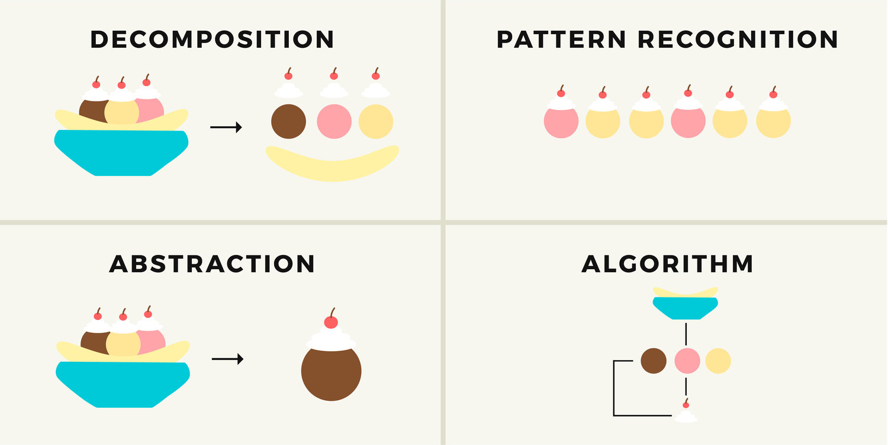
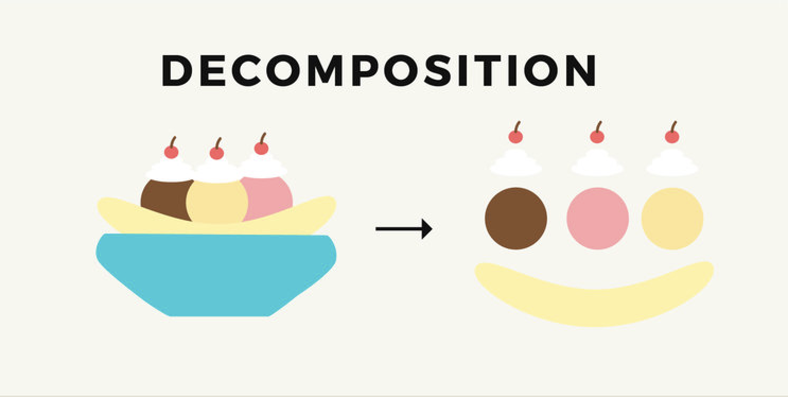
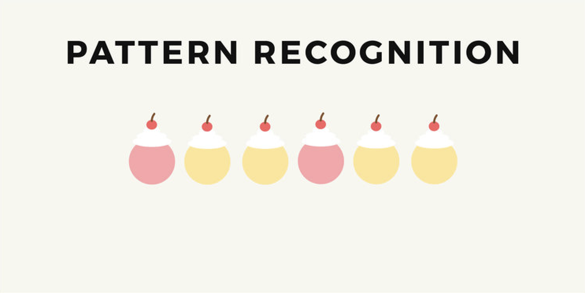
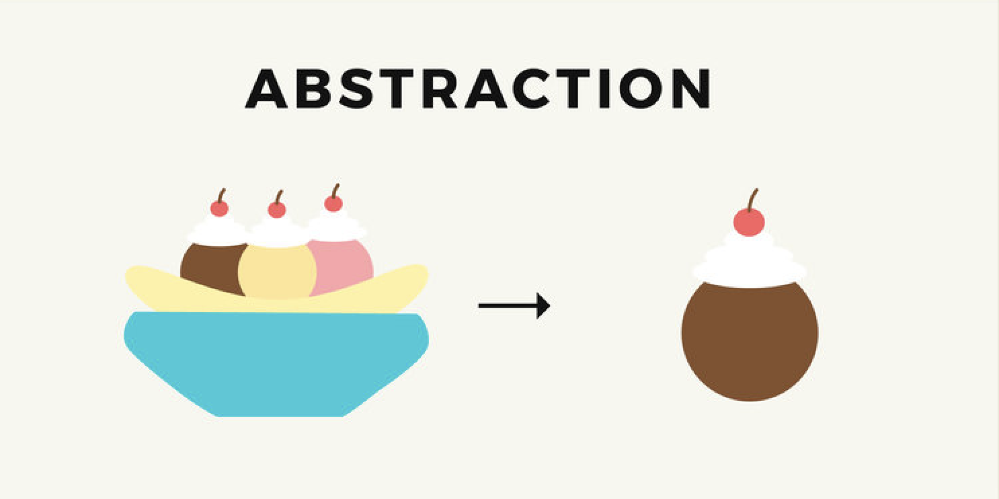
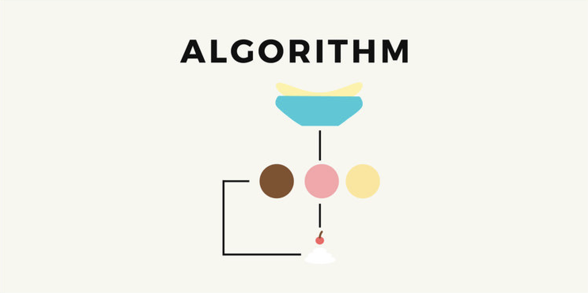
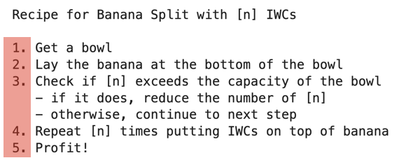
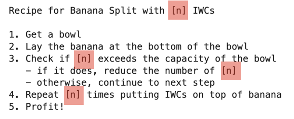
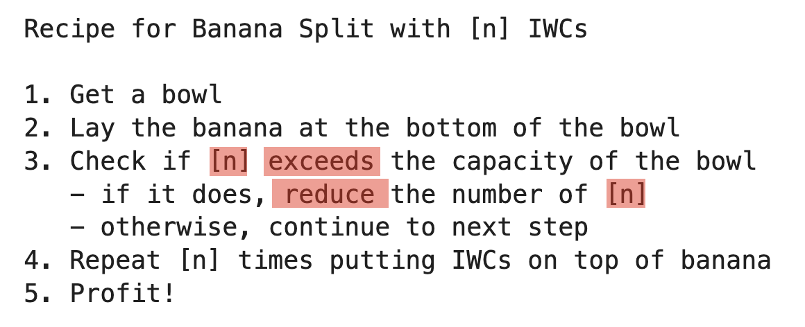
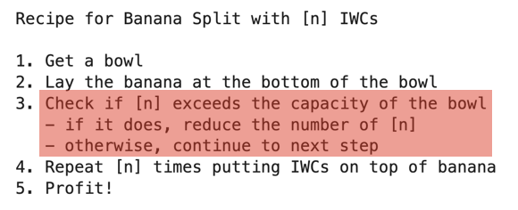

Computational Thinking for Problem Solving#

From: https://www.tinythinkers.org/benefits
Computational thinking is a framework for solving problems using the following approaches:
Decomposition: breaking down a problem into smaller, manageable partsPattern recognition: identifying similarities and patterns in partsAbstraction: identifying key features that can be generalizedAlgorithm: creating a step-by-step instruction for solving the problem
Solving a problem: making a banana split#
1. Decomposition#

To solve a problem, we can begin by breaking it down into smaller parts
In trying to make a sundae, we can see what we need (i.e. the ingredients)
Ice cream
Whipped cream
Cherries
Banana
2. Pattern recognition#

We see that there are parts that form a pattern
The ice cream, whipped cream, and cherry are repeated
3. Abstraction#

We look to see if there are ways to generalize a pattern but removing the details
The ice cream, whipped cream, and cherry appear to be organized as a unit if we ignore the details like:
the flavor/color of the ice cream
the height of the whipped cream
the size/shape of the cherry
We can abstract away the details and think of it as a common unit (let’s call it IWC)
4. Algorithm#

Now that we have thought through the problem, we can start to compose all the steps needed to make a banana split
Recipe for Banana Split with [n] IWCs
1. Get a bowl
2. Lay the banana at the bottom of the bowl
3. Check if [n] exceeds the capacity of the bowl
- if it does, reduce the number of [n]
- otherwise, continue to next step
4. Repeat [n] times putting IWCs on top of banana
5. Profit!
The main recipe refers to another smaller recipe to make IWCs
Recipe for making IWCs
1. Take one scoop of ice cream
2. Squirt whipping cream on top of ice cream
3. Place a cherry on top of the whipping cream
Programming concepts#
As you can see, computational thinking is one of the strategies for problem solving, and is a framework that we can use in programming, which is to translate the ideas into a form that a computer can act on.
The recipe for making banana split(s) illustrates some principles used in programming:
Recipe for Banana Split with [n] IWCs
1. Get a bowl
2. Lay the banana at the bottom of the bowl
3. Check if [n] exceeds the capacity of the bowl
- if it does, reduce the number of [n]
- otherwise, continue to next step
4. Repeat [n] times putting IWCs on top of banana
5. Profit!
1. Ordered sequence of steps#

We can see that the recipe calls for following a defined sequence of steps
This is analogous to the flow of a program
2. Variables and Data#

The recipe can be adapted to different sizes and the number of ICWs is stored with a label [
n] , and used in other parts of the recipeWe call this a
variable, which is a label to store data and also other recipesA related concept is
data typesand how data can be organized into larger units known asdata structures
3. Operations#

In the recipe, we use the data stored in [
n] in different waysWe
comparethe value in [n] to see if it exceeds the capacity of the bowlWe also
changethe value in [n] by reducing it
We call these
operationsthat we can apply to data in a program
4. Conditionals#

In the recipe, the sequence of steps includes checks that will alter how the recipe should proceed
We call these checks
conditionals, where the flow of a program can change, depending on outcome (true/false) of a conditional check
5. Iteration/Looping#

We can see that there is a step in the recipe that a same procedure (making IWCs) is repeated
We call this
iteration/looping, where steps or procedures can be called repeated until a condition is satisfied
6. Functions/Procedures#

The main recipe for making a banana split calls for a smaller recipe for making IWCs
This abstraction simplifies the main recipe, allowing one to see the main steps without thinking too much about the details
In programming, the smaller recipe is called a
function/procedure, which encapsulates the steps with a label that can be used are part of a larger program
A prelude#
In this course, we will be learning a programming language called R, an open source language that is widely used for data science and statistical computing
We will be learning how to use R in 3 parts
Introduction to Programming in R
Introduction to Data Exploration/Visualization with Tidyverse
Introduction to Statistical Computing
1. Introduction to Programming with R#
We will be learning about the base R language and see how we can use the concepts of variables, data types, data structures, operations, conditionals, iteration and functions
We will learn how to write a simple decision making program that will output recommendations to admit or review a patient
# Variables and data structure
df <- data.frame(id=c(1,2,3,4,5),
age=c(19,45, 23, 55, 65),
name=c("Alice","Bob","Charlie","David", "Eliza"),
risk=c("low", "med", "high", "high", "med"))
# Iteration, decision-making and functions
decide <- function(data, age_limit=50) {
result <- vector()
for (index in 1:nrow(data)) {
person <- df[index,]
if (person$age > age_limit | person$risk=="high") {
result <- c(result, "admit")
} else {
result <- c(result, "review later") # append
}
}
return(result)
}
# Process data to get output
df$decision <- decide(df)
df
| id | age | name | risk | decision |
|---|---|---|---|---|
| <dbl> | <dbl> | <chr> | <chr> | <chr> |
| 1 | 19 | Alice | low | review later |
| 2 | 45 | Bob | med | review later |
| 3 | 23 | Charlie | high | admit |
| 4 | 55 | David | high | admit |
| 5 | 65 | Eliza | med | admit |
2. Introduction to Data Exploration/Visualization with Tidyverse#
We will next learn how to extend the functionality of base R by using a library called tidyverse
This library allows use to perform exploration and visualization of data more easily by combining different functions.
The example below show how we can process data and visualize it using tidyverse
library(tidyverse)
library(GGally)
# read data and process
data <- read_csv("https://raw.githubusercontent.com/kennethban/dataset/main/framingham.csv")
data <- data %>%
rename(sex = male) %>%
mutate(sex = as.factor(sex)) %>%
mutate(education = as.factor(education)) %>%
mutate(currentSmoker = as.factor(currentSmoker)) %>%
mutate(BPMeds = as.factor(BPMeds)) %>%
mutate(prevalentStroke = as.factor(prevalentStroke)) %>%
mutate(prevalentHyp = as.factor(prevalentHyp)) %>%
mutate(diabetes = as.factor(diabetes)) %>%
mutate(TenYearCHD = as.factor(TenYearCHD))
# adjust size of the image output
options(repr.plot.width=15, repr.plot.height=15)
# plot pairs
data %>% select(sex, currentSmoker, diabetes, sysBP, glucose, totChol, TenYearCHD) %>%
drop_na() %>%
ggpairs(aes(color="salmon"))
── Attaching core tidyverse packages ───────────────────────────── tidyverse 2.0.0 ──
✔ dplyr 1.1.1 ✔ readr 2.1.4
✔ forcats 1.0.0 ✔ stringr 1.5.0
✔ ggplot2 3.4.2 ✔ tibble 3.2.1
✔ lubridate 1.9.2 ✔ tidyr 1.3.0
✔ purrr 1.0.1
── Conflicts ─────────────────────────────────────────────── tidyverse_conflicts() ──
✖ dplyr::filter() masks stats::filter()
✖ dplyr::lag() masks stats::lag()
ℹ Use the conflicted package (<http://conflicted.r-lib.org/>) to force all conflicts to become errors
Registered S3 method overwritten by 'GGally':
method from
+.gg ggplot2
Rows: 4240 Columns: 16
── Column specification ─────────────────────────────────────────────────────────────
Delimiter: ","
dbl (16): male, age, education, currentSmoker, cigsPerDay, BPMeds, prevalent...
ℹ Use `spec()` to retrieve the full column specification for this data.
ℹ Specify the column types or set `show_col_types = FALSE` to quiet this message.
`stat_bin()` using `bins = 30`. Pick better value with `binwidth`.
`stat_bin()` using `bins = 30`. Pick better value with `binwidth`.
`stat_bin()` using `bins = 30`. Pick better value with `binwidth`.
`stat_bin()` using `bins = 30`. Pick better value with `binwidth`.
`stat_bin()` using `bins = 30`. Pick better value with `binwidth`.
`stat_bin()` using `bins = 30`. Pick better value with `binwidth`.
`stat_bin()` using `bins = 30`. Pick better value with `binwidth`.
`stat_bin()` using `bins = 30`. Pick better value with `binwidth`.
`stat_bin()` using `bins = 30`. Pick better value with `binwidth`.
`stat_bin()` using `bins = 30`. Pick better value with `binwidth`.
`stat_bin()` using `bins = 30`. Pick better value with `binwidth`.
`stat_bin()` using `bins = 30`. Pick better value with `binwidth`.
3. Introduction to Statistical Computing#
Finally, we will learn statistical concepts using R by resampling and simulation
Descriptive statistics
Inferential statistics
Sampling
Hypothesis testing
Statistical modeling
As an example, we can use R to examine relationships between an outcome (systolic BP) and possible factors (BMI and age) and quantify their effects
library(ggstatsplot)
library(stargazer)
# fit a linear regression model
fit_BMI_age <- data %>% lm(sysBP ~ BMI + age, .)
# print table
capture.output(stargazer(fit_BMI_age, type="html")) %>%
paste(collapse="") %>%
IRdisplay::display_html()
# adjust size of the image output
options(repr.plot.width=10, repr.plot.height=10)
# plot coefficients
ggcoefstats(fit_BMI_age) + theme_grey(base_size = 16)
You can cite this package as:
Patil, I. (2021). Visualizations with statistical details: The 'ggstatsplot' approach.
Journal of Open Source Software, 6(61), 3167, doi:10.21105/joss.03167
Please cite as:
Hlavac, Marek (2022). stargazer: Well-Formatted Regression and Summary Statistics Tables.
R package version 5.2.3. https://CRAN.R-project.org/package=stargazer
| Dependent variable: | |
| sysBP | |
| BMI | 1.500*** |
| (0.073) | |
| age | 0.910*** |
| (0.035) | |
| Constant | 48.509*** |
| (2.406) | |
| Observations | 4,221 |
| R2 | 0.230 |
| Adjusted R2 | 0.230 |
| Residual Std. Error | 19.275 (df = 4218) |
| F Statistic | 631.228*** (df = 2; 4218) |
| Note: | *p<0.1; **p<0.05; ***p<0.01 |